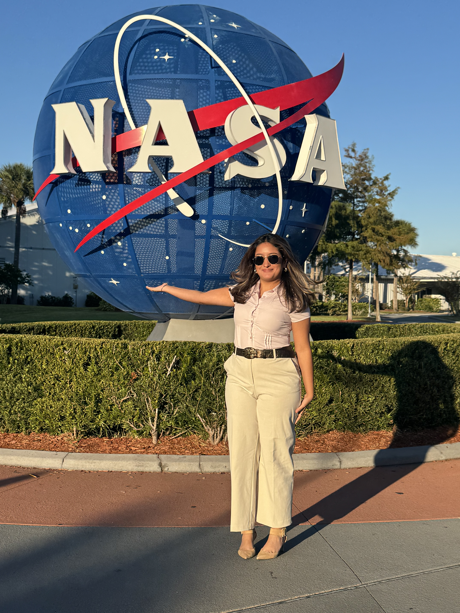
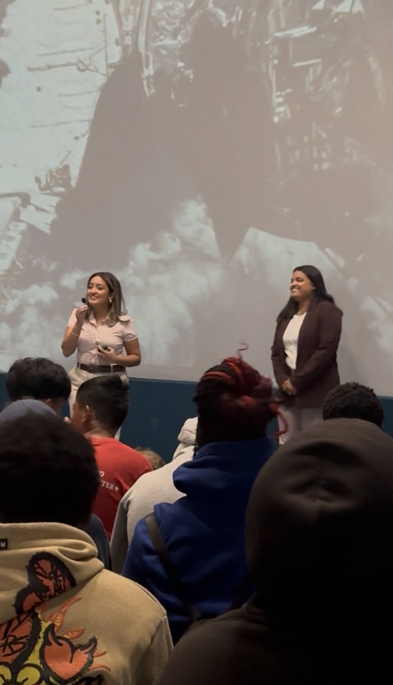
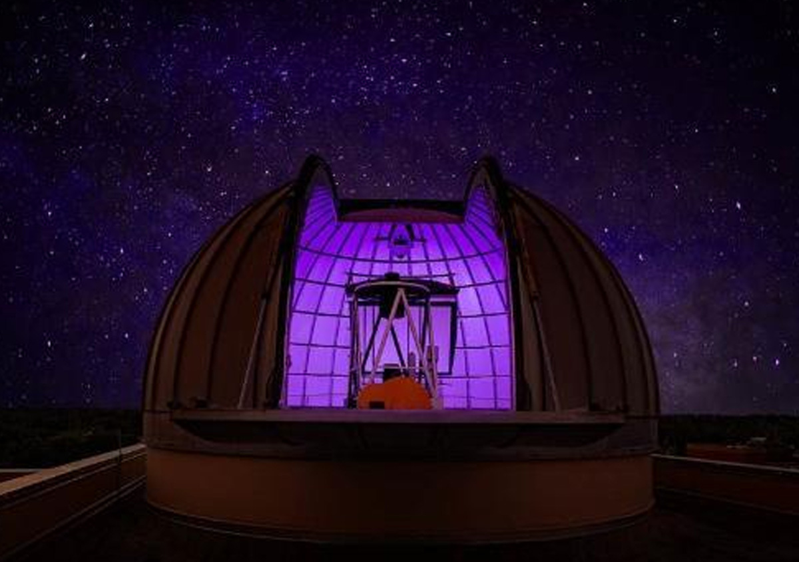
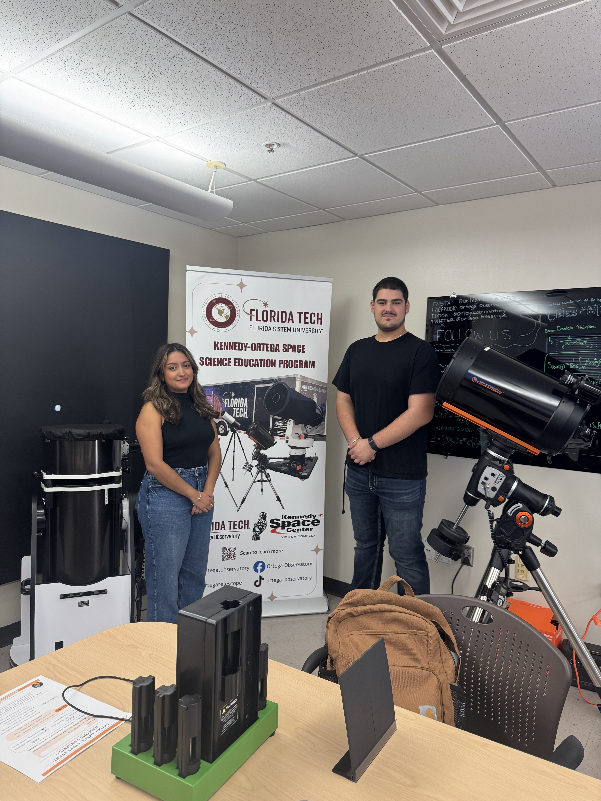
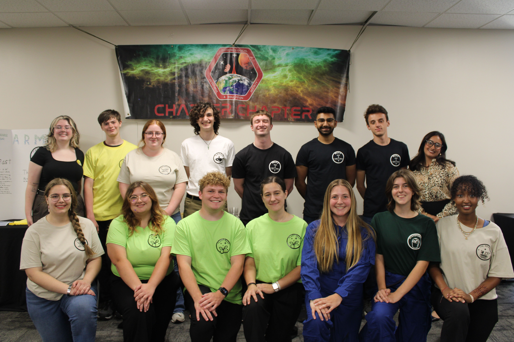
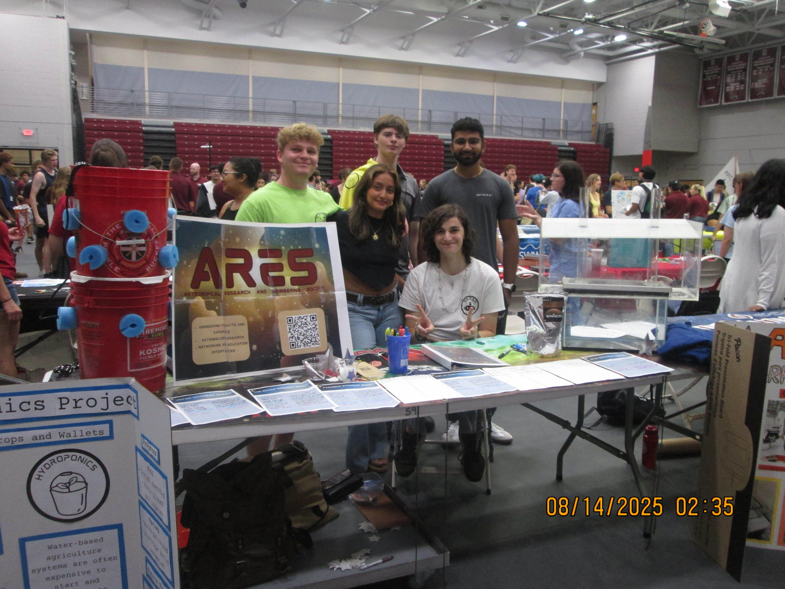
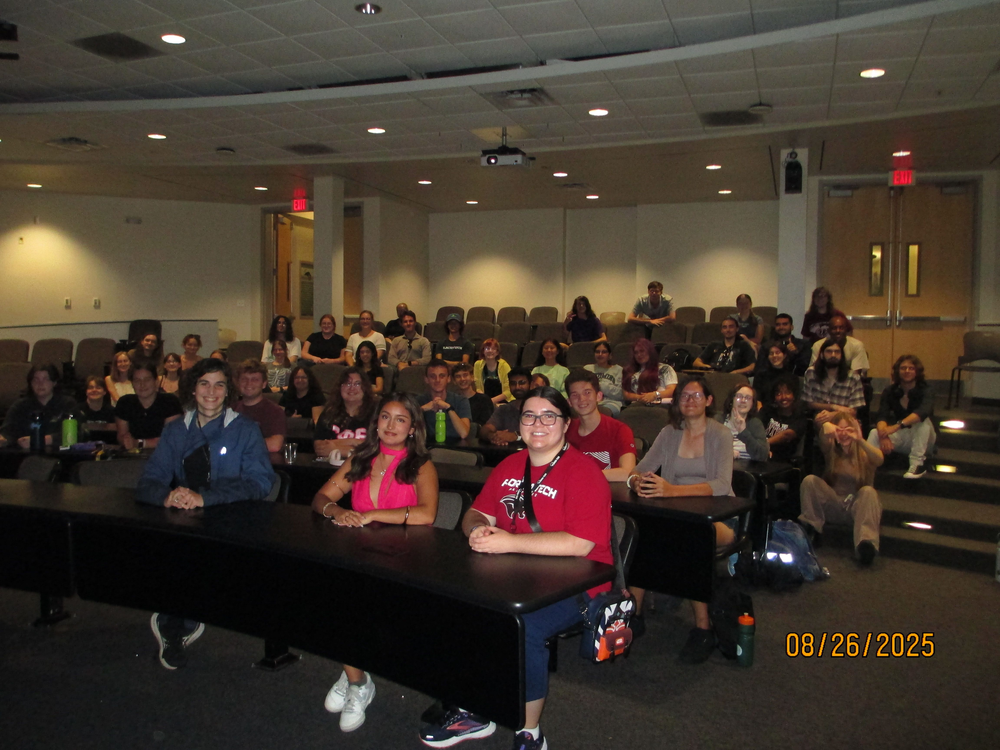

Science is meant to be shared.
Outreach has been one of the most meaningful parts of my academic path. I care deeply about making astronomy, planetary science, and STEM feel accessible to people who may not see themselves represented in science yet. Whether I am helping someone look through a telescope for the first time, speaking to a public audience, or supporting students in research, I enjoy creating spaces where science feels exciting, personal, and possible.
My outreach experience includes public astronomy events, student research leadership, STEM education, guest speaking, volunteering, and philanthropic work. These experiences have helped me grow not only as a scientist, but also as a communicator, mentor, and community member.
Outreach Focus
- Public astronomy and telescope observing
- Science communication and guest speaking
- Student research leadership
- STEM education and mentorship
- Volunteering and philanthropic service
Kennedy Space Center
I had the opportunity to serve as a special guest speaker at Kennedy Space Center as a guest scientist lecturer. This experience allowed me to share astronomy and planetary science with a broader public audience while representing the role of student scientists in outreach and education.
Speaking in a public science setting helped me practice translating technical ideas into language that is clear, engaging, and accessible. It also reminded me why outreach matters: people connect with science when they can ask questions, hear stories, and see themselves as part of the larger process of discovery.


Ortega Observatory
Through my work with the Ortega Observatory at Florida Institute of Technology, I supported public outreach events, telescope observing, and night sky education. This included helping visitors observe celestial objects, explaining astronomical concepts, and assisting with events designed to make astronomy more approachable for the public.
Observatory outreach taught me how powerful direct experience can be. Looking through a telescope can make astronomy feel immediate in a way that a textbook cannot. I enjoyed helping visitors understand what they were seeing and connecting those observations to larger ideas in space science.
Observatory Work
- Public observing nights
- Telescope operation and visitor support
- Night sky interpretation
- Astronomy education for public audiences
- Community-facing science engagement


ARES Leadership
I served as President of the Astronomical Research and Education Society, a student-led research organization at Florida Institute of Technology. In this role, I helped lead and support more than ten active projects across engineering, astronomy, astrobiology, and software development. My work included organizing academic events, coordinating student research efforts, supporting project leads, and helping students find their place in space science.
ARES was especially important to me because it gave students a way to begin research before they felt fully ready. I wanted the club to be a place where students could ask questions, build skills, attempt ambitious projects, and learn from each other. Leading ARES strengthened my ability to manage teams, communicate across different research interests, and build a student community around curiosity.



Volunteering & Philanthropic Work
Letters to a Pre-Scientist
I participated in science mentorship through letter writing, encouraging elementary school students to stay curious about STEM and imagine themselves as future scientists. This work gave me a chance to share my own academic path in a way that was personal, honest, and encouraging.
Princesses with Power Tools
I supported programming focused on breaking barriers for young girls in STEM. Through hands-on activities, students gained confidence using tools, building, and seeing themselves in technical and scientific spaces.
Community & Philanthropy
My service work has also included leadership and philanthropic involvement through student organizations. I value service that combines education, confidence-building, representation, and practical support for the community.
Why outreach matters to me
Outreach is not separate from science. It is part of how science grows. Public engagement, mentorship, and education help people understand why research matters and who gets to participate in it. I care about outreach because I know how much representation, encouragement, and access can change a student’s sense of what is possible.
As I continue into graduate school, I hope to keep combining research with public communication, especially in ways that make Earth science, planetary science, and astronomy feel more human and more reachable.
Service Values
- Accessibility in science education
- Representation in STEM
- Hands-on learning
- Student mentorship
- Community-centered communication